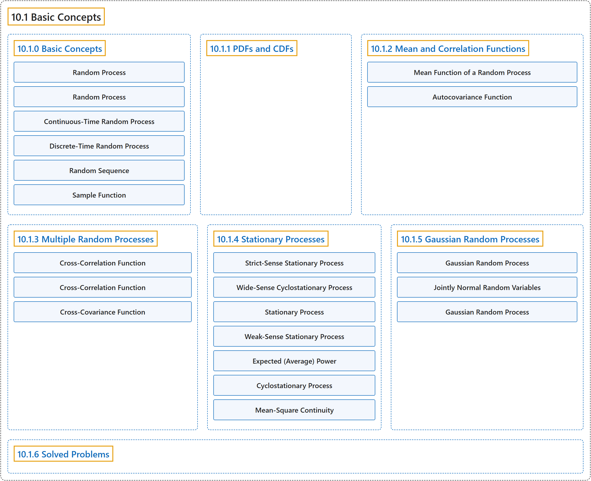

10.1 Basic Concepts
Classification

Glossary
| Term | Definition | 中文翻译 | Source |
|---|---|---|---|
| 10.1 Basic Concepts 基本概念 |
(No definition) | （无定义） | Pishro-Nik, 2014, section 10.1 |
| 10.1.0 Basic Concepts 基本概念 |
(No definition) | （无定义） | Pishro-Nik, 2014, section 10.1.0 |
| Random Process 随机过程 |
"A random process is a collection of random variables usually indexed by time." | 随机过程是通常以时间为指标的随机变量集合。 | Pishro-Nik, 2014, section 10.1.0 |
| Random Process 随机过程 |
"When we consider the values of \(S(t)\) for \(t \in [0,\infty)\) collectively, we say \(S(t)\) is a random process or a stochastic process." | 当我们把 \(S(t)\) 在 \(t \in [0,\infty)\) 上的取值作为一个整体来考虑时，我们说 \(S(t)\) 是随机过程（又称 stochastic process）。 | Pishro-Nik, 2014, section 10.1.0 |
| Continuous-Time Random Process 连续时间随机过程 |
"In general, when we have a random process \(X(t)\) where \(t\) can take real values in an interval on the real line, then \(X(t)\) is a continuous-time random process." | 一般地，若随机过程 \(X(t)\) 中的 \(t\) 可取实直线上某个区间内的实数值，则 \(X(t)\) 是连续时间随机过程。 | Pishro-Nik, 2014, section 10.1.0 |
| Discrete-Time Random Process 离散时间随机过程 |
"On the other hand, you can have a discrete-time random process." | 另一方面，也可以有离散时间随机过程。 | Pishro-Nik, 2014, section 10.1.0 |
| Random Sequence 随机序列 |
"Therefore, a discrete-time random process is just a sequence of random variables. For this reason, discrete-time random processes are sometimes referred to as random sequences." | 因此，离散时间随机过程就是一个随机变量序列。正因为如此，离散时间随机过程有时也称为随机序列。 | Pishro-Nik, 2014, section 10.1.0 |
| Sample Function 样本函数 |
"We call each of these possible functions of \(X(t)\) a sample function or sample path. It is also called a realization of \(X(t)\)." | 我们把 \(X(t)\) 的每一个这样的可能函数称为样本函数或样本路径。它也称为 \(X(t)\) 的一次实现。 | Pishro-Nik, 2014, section 10.1.0 |
| 10.1.1 PDFs and CDFs 概率密度函数与累积分布函数 |
(No definition) | （无定义） | Pishro-Nik, 2014, section 10.1.1 |
| 10.1.2 Mean and Correlation Functions 均值函数与相关函数 |
(No definition) | （无定义） | Pishro-Nik, 2014, section 10.1.2 |
| Mean Function of a Random Process 随机过程的均值函数 |
"For a random process \(\big\{X(t), t \in J \big\}\), the mean function \(\mu_X(t):J \rightarrow \mathbb{R}\), is defined as \(\begin{align} \mu_X(t)=E[X(t)] \end{align}\)" | 对于随机过程 \(\big\{X(t), t \in J \big\}\)，其均值函数 \(\mu_X(t):J \rightarrow \mathbb{R}\) 定义为 \(\begin{align} \mu_X(t)=E[X(t)] \end{align}\) | Pishro-Nik, 2014, section 10.1.2 |
| Autocovariance Function 自协方差函数 |
"For a random process \(\big\{X(t), t \in J \big\}\), the autocovariance function or, simply, the covariance function, \(C_X(t_1,t_2)\), is defined by \(\begin{align} C_X(t_1,t_2)&=\textrm{Cov}\big(X(t_1),X(t_2)\big)\\ &=R_X(t_1,t_2)-\mu_X(t_1) \mu_X(t_2), \quad \textrm{for }t_1,t_2 \in J. \end{align}\)" | 对于随机过程 \(\big\{X(t), t \in J \big\}\)，自协方差函数或简称协方差函数 \(C_X(t_1,t_2)\) 定义为 \(\begin{align} C_X(t_1,t_2)&=\textrm{Cov}\big(X(t_1),X(t_2)\big)\\ &=R_X(t_1,t_2)-\mu_X(t_1) \mu_X(t_2), \quad \textrm{for }t_1,t_2 \in J. \end{align}\) | Pishro-Nik, 2014, section 10.1.2 |
| 10.1.3 Multiple Random Processes 多个随机过程 |
(No definition) | （无定义） | Pishro-Nik, 2014, section 10.1.3 |
| Cross-Correlation Function 互相关函数 |
"the cross-correlation function \(R_{XY}(t_1,t_2)\), is defined by" | 互相关函数 \(R_{XY}(t_1,t_2)\) 定义为 | Pishro-Nik, 2014, section 10.1.3 |
| Cross-Correlation Function 互相关函数 |
"For two random processes \(\big\{X(t), t \in J \big\}\) and \(\big\{Y(t), t \in J \big\}\): \(-\) the cross-correlation function \(R_{XY}(t_1,t_2)\), is defined by \(\begin{align} R_{XY}(t_1,t_2)=E[X(t_1)Y(t_2)], \quad \textrm{for }t_1,t_2 \in J; \end{align}\)" | 对于两个随机过程 \(\big\{X(t), t \in J \big\}\) 和 \(\big\{Y(t), t \in J \big\}\)：\(-\) 互相关函数 \(R_{XY}(t_1,t_2)\) 定义为 \(\begin{align} R_{XY}(t_1,t_2)=E[X(t_1)Y(t_2)], \quad \textrm{for }t_1,t_2 \in J; \end{align}\) | Pishro-Nik, 2014, section 10.1.3 |
| Cross-Covariance Function 互协方差函数 |
"the cross-covariance function \(C_{XY}(t_1,t_2)\), is defined by \(\begin{align} C_{XY}(t_1,t_2)&=\textrm{Cov}\big(X(t_1),Y(t_2)\big)\\ &=R_{XY}(t_1,t_2)-\mu_X(t_1) \mu_Y(t_2), \quad \textrm{for }t_1,t_2 \in J. \end{align}\)" | 互协方差函数 \(C_{XY}(t_1,t_2)\) 定义为 \(\begin{align} C_{XY}(t_1,t_2)&=\textrm{Cov}\big(X(t_1),Y(t_2)\big)\\ &=R_{XY}(t_1,t_2)-\mu_X(t_1) \mu_Y(t_2), \quad \textrm{for }t_1,t_2 \in J. \end{align}\) | Pishro-Nik, 2014, section 10.1.3 |
| 10.1.4 Stationary Processes 平稳过程 |
(No definition) | （无定义） | Pishro-Nik, 2014, section 10.1.4 |
| Strict-Sense Stationary Process 严平稳过程 |
"A continuous-time random process \(\big\{X(t), t \in \mathbb{R}\big\}\) is strict-sense stationary or simply stationary if, for all \(t_1,t_2,\cdots, t_r \in \mathbb{R}\) and all \(\Delta \in \mathbb{R}\), the joint CDF of" | 连续时间随机过程 \(\big\{X(t), t \in \mathbb{R}\big\}\) 称为严平稳或简称平稳的，若对所有 \(t_1,t_2,\cdots, t_r \in \mathbb{R}\) 和所有 \(\Delta \in \mathbb{R}\)，其联合累积分布函数 | Pishro-Nik, 2014, section 10.1.4 |
| Wide-Sense Cyclostationary Process 广义循环平稳过程 |
"A continuous-time random process \(\big\{X(t), t \in \mathbb{R}\big\}\) is weak-sense cyclostationary or wide-sense cyclostationary if there exists a positive real number \(T\) such that \(\mu_X(t+T)=\mu_X(t)\), for all \(t\in \mathbb{R}\); \(R_X(t_1+T,t_2+T)=R_X(t_1,t_2)\), for all \(t_1,t_2 \in \mathbb{R}\)." | 连续时间随机过程 \(\big\{X(t), t \in \mathbb{R}\big\}\) 称为弱循环平稳或广义循环平稳，如果存在正实数 \(T\)，使得 \(\mu_X(t+T)=\mu_X(t)\)，对所有 \(t\in \mathbb{R}\) 成立；\(R_X(t_1+T,t_2+T)=R_X(t_1,t_2)\)，对所有 \(t_1,t_2 \in \mathbb{R}\) 成立。 | Pishro-Nik, 2014, section 10.1.4 |
| Stationary Process 平稳过程 |
"Intuitively, a random process \(\big\{X(t), t \in J \big\}\) is stationary if its statistical properties do not change by time." | 直观地说，若随机过程 \(\big\{X(t), t \in J \big\}\) 的统计性质不随时间改变，则它是平稳的。 | Pishro-Nik, 2014, section 10.1.4 |
| Weak-Sense Stationary Process 弱平稳过程（宽平稳过程） |
"A random process is called weak-sense stationary or wide-sense stationary (WSS) if its mean function and its correlation function do not change by shifts in time." | 若一个随机过程的均值函数和相关函数不随时间平移而改变，则称其为弱平稳或宽平稳（WSS）过程。 | Pishro-Nik, 2014, section 10.1.4 |
| Expected (Average) Power 期望（平均）功率 |
"The quantity \(E[X(t)^2]\) is called the expected (average) power in \(X(t)\) at time \(t\)." | 量 \(E[X(t)^2]\) 称为 \(X(t)\) 在时刻 \(t\) 的期望（平均）功率。 | Pishro-Nik, 2014, section 10.1.4 |
| Cyclostationary Process 循环平稳过程 |
"In other words, the random variables \(\begin{align} X(t_1), X(t_2), \cdots, X(t_r) \end{align}\) have the same joint CDF as the random variables \(\begin{align} X(t_1+T), X(t_2+T), \cdots, X(t_r+T). \end{align}\) Such random variables are called cyclostationary." | 换言之，随机变量 \(\begin{align} X(t_1), X(t_2), \cdots, X(t_r) \end{align}\) 与随机变量 \(\begin{align} X(t_1+T), X(t_2+T), \cdots, X(t_r+T). \end{align}\) 具有相同的联合 CDF。这样的随机变量称为循环平稳的。 | Pishro-Nik, 2014, section 10.1.4 |
| Mean-Square Continuity 均方连续 |
"Let \(X(t)\) be a continuous-time random process. We say that \(X(t)\) is mean-square continuous at time \(t\) if" | 设 \(X(t)\) 为连续时间随机过程。我们说 \(X(t)\) 在时刻 \(t\) 是均方连续的，如果 | Pishro-Nik, 2014, section 10.1.4 |
| 10.1.5 Gaussian Random Processes 高斯随机过程 |
(No definition) | （无定义） | Pishro-Nik, 2014, section 10.1.5 |
| Gaussian Random Process 高斯随机过程 |
"A random process \(\big\{X(t), t \in J \big\}\) is said to be a Gaussian (normal) random process if, for all" | 随机过程 \(\big\{X(t), t \in J \big\}\) 称为高斯（正态）随机过程，若对所有 | Pishro-Nik, 2014, section 10.1.5 |
| Jointly Normal Random Variables 联合正态随机变量 |
"As we saw before, random variables \(X_1\), \(X_2\),..., \(X_n\) are said to be jointly normal if, for all \(a_1\),\(a_2\),..., \(a_n\) \(\in \mathbb{R}\), the random variable" | 如前所述，随机变量 \(X_1\)，\(X_2\)，……，\(X_n\) 称为联合正态的，如果对所有 \(a_1\)，\(a_2\)，……，\(a_n\) \(\in \mathbb{R}\)，随机变量 | Pishro-Nik, 2014, section 10.1.5 |
| Gaussian Random Process 高斯随机过程（正态随机过程） |
"A random process \(\big\{X(t), t \in J \big\}\) is said to be a Gaussian (normal) random process if, for all \(\begin{align} & t_1,t_2, \dots, t_n \in J, \end{align}\) the random variables \(X(t_1)\), \(X(t_2)\),..., \(X(t_n)\) are jointly normal." | 若对所有 \(\begin{align} & t_1,t_2, \dots, t_n \in J, \end{align}\)，随机变量 \(X(t_1)\)，\(X(t_2)\)，……，\(X(t_n)\) 是联合正态的，则称随机过程 \(\big\{X(t), t \in J \big\}\) 为高斯（正态）随机过程。 | Pishro-Nik, 2014, section 10.1.5 |
| 10.1.6 Solved Problems 例题详解 |
(No definition) | （无定义） | Pishro-Nik, 2014, section 10.1.6 |
References
Pishro-Nik, H. (2014). Introduction to probability, statistics, and random processes. Kappa Research. Retrieved October 28, 2026, from https://www.probabilitycourse.com/